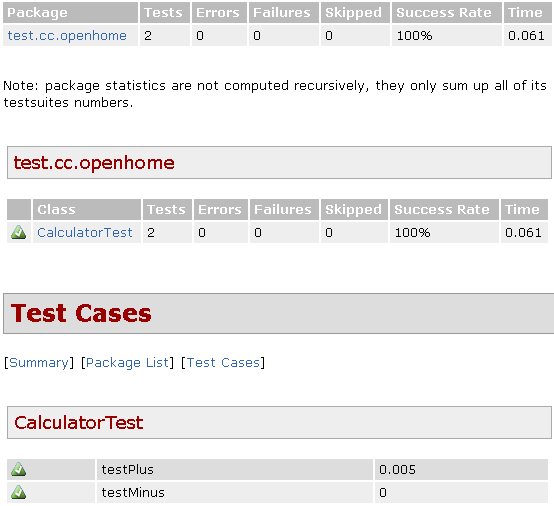

|
|
Maven的 建構生命週期 中就包括了test的階段，預設產生的POM中，使用的JUnit版本是3.x，你可以修改為其它版本： ...
<dependencies> <dependency> <groupId>junit</groupId> <artifactId>junit</artifactId> <version>4.8.2</version> <scope>test</scope> </dependency> </dependencies> ... 如果要建立測試，測試類別是放在src/test/java下。Maven用來執行測試的plugin是 maven-surefire-plugin，雖然預設會使用JUnit測試，但maven-surefire-plugin負責的是單元測試，並不侷限於使用JUnit，你也可以設定使用其它的測試框架。 以 使用 JUnit 4.x 中的CalculatorTest為例，要執行測試，只要下mvn test就可以了，通常會先進行清除專案再進行測試，所以你可以如下： mvn clean test
Maven首先會清除專案，然後執行test階段前所有的階段，最後進行test階段。測試的一些資訊片段如下： ...
[INFO] --- maven-surefire-plugin:2.7.1:test (default-test) @ example --- [INFO] Surefire report directory: C:\workspace\example\target\surefire-reports ------------------------------------------------------- T E S T S ------------------------------------------------------- Running test.cc.openhome.CalculatorTest Tests run: 2, Failures: 0, Errors: 0, Skipped: 0, Time elapsed: 0.07 sec Results : Tests run: 2, Failures: 0, Errors: 0, Skipped: 0 [INFO] ------------------------------------------------------------------------ [INFO] BUILD SUCCESS [INFO] ------------------------------------------------------------------------ [INFO] Total time: 4.246s [INFO] Finished at: Wed Jan 26 11:01:32 CST 2011 [INFO] Final Memory: 3M/15M [INFO] ------------------------------------------------------------------------ 預設會運行測試資料夾中所有的測試，如果你要作一些過濾，則可以設定POM。例如： ...
<build> <plugins> <plugin> <artifactId>maven-surefire-plugin</artifactId> <version>2.7.2</version> <configuration> <includes> <include>**/*Test.java</include> </includes> </configuration> </plugin> </plugins> </build> ... 上面的設定包括了結尾為Test的所有測試類別。 如果要產生測試報告，則可以使用 maven-surefire-report-plugin，只要執行： mvn surefire-report:report
Maven會先編譯所有的類別，接著使用maven-surefire-plugin執行測試產生純文字與XML格式的測試結果檔案，分別放在target/surefire與target/surefire-reports資料夾中，接著maven-surefire-report-plugin再將target/surefire-reports資料夾中的XML轉為HTML，放在target/site資料夾（預設的文件資料夾）。 maven site是用來產生網站文件，而maven-surefire-plugin產生的HTML，會使用maven site產生的網站文件之樣式，所以你可以先執行maven site，之後開啟產生的測試報告HTML，畫面如下：  |